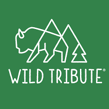

CEO's of Earth

There are many businesses in Montana that give back to the earth. Some sell products and donate a part of their earnings and many use recycled products to innovate goods. Here are just a few of the businesses that give back in unique ways. Follow the links to learn more about them, and support their cause.
Wild Tribute
"Wild Tribute is a clothing brand that seeks to pay tribute to the history and spirit of the national parks. Their unique designs and soft fabrics are just some of the reasons why I love this brand. Wild Tribute donates 4% of its proceeds to national parks and public lands".
Pendleton
"You’ve probably heard of Pendleton, a historic family-owned company known for their woven blankets and durable wool clothing. However, Pendleton also has an entire national park collection, where they offer clothing, blankets and many other things that help support national parks."
"For every item sold from Pendleton’s national park collection, the National Park Foundation receives a royalty, which is an amount of money paid by Pendleton to the NPF for the use of the NPF brand or patent. This partnership has raised over $700,000 for the NPF!"
Good and Well Supply Co.
"Good and Well Supply Co. donates 5% of its profits back to the National Park Foundation. In addition to apparel options, the brand has created a collection of national park candles that embody the scents of many of the iconic parks. My favorite is the Saguaro national park candle, which is made with scent notes of cactus, desert flowers and amber."